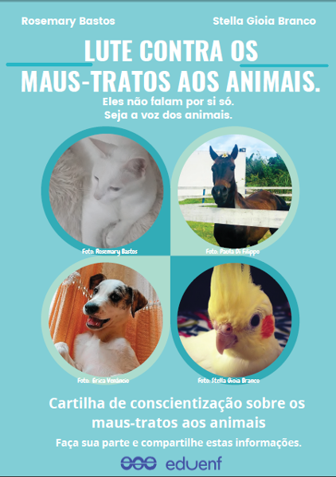
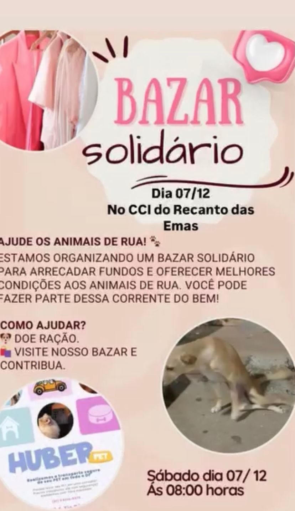

nós atuamos em todo o Brasil, a PetStar busca o bem dos nossos bichinhos em todo o país, temos vários abrigos, lugares nas cidades onde podemos ajudar cães e gatos que precisam de nós, temos várias parcerias também, e a nossa empresa providencia comida e água nas ruas para nossos animais.
denuncias sobre maus-tratos
não existe nada mais cruel do que machucar um bichinho inocente, por segurança, nós também preparamos sempre uma ficha antes de doar um animalzinho, a pena para maus-tratos animais é 10 anos sem fiança, então denunciem pessoas que têm a coragem de matar, bater e outras coisas até piores, e vamos vencer a maldade juntos.

eventos PetStar
Nós também realizamos eventos para arrecadar dinheiro, e investir em cuidados, bem materiais em nossos abrigos;
nós realizamos bazares de roupas e sapatos, onde você também pode ajudar, para mais informações sobre o nosso bazar, postamos nas nossas redes sociais como instagram, tik tok e facebook.

Dúvidas frequentes
você pode entrar em contato conosco por WhatsApp pra nos contatar que você quer adotar um pet, ou ir direto em um dos nossos abrigos, e depois que escolher o pet que você quer adotar preecher um formulario que será entregue no local ja.
Claro! Você pode doar, divulgar nosso trabalho ou se tornar um voluntário online. Toda ajuda é bem-vinda!
A castração é fundamental para o controle populacional de animais, evitando o abandono e a superpopulação. Ela previne diversas doenças, como infecções uterinas e câncer. Além disso, reduz comportamentos agressivos e de fuga. É um ato de amor e cuidado que melhora a qualidade de vida dos pets.
.